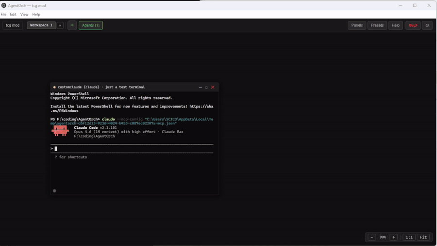
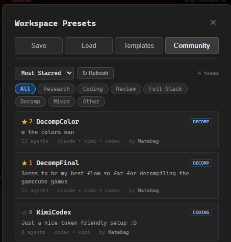

Build a crew, ship faster.

Per-agent color themes
Right-click any terminal to customize chrome, border, background, and text colors. 8 presets (Sunshine, Ocean, Crimson…) or roll your own. "Apply theme by role" colors your whole team in one click.

Community Teams
Share your best team setups with the world. Browse, star, and import configurations from other users. Categories for research, coding, review, full-stack, decomp. No account needed.

Remote View & Workshop
Check on your workshop from your phone via a Cloudflare tunnel. Unlock Workshop mode with a passcode and get a spatial canvas mirroring your desktop — pinch, zoom, pan, kill agents remotely.
┌──────────────────────────────┐ │ [orchestrator] Opus │ │ ↓ send_message │ │ ↓ post_task(target_role) │ ├──────────────────────────────┤ │ [worker-1] Sonnet │ │ [worker-2] Sonnet │ │ [reviewer] GPT-5 │ │ [researcher] Kimi K2.5 │ └──────────────────────────────┘
Multi-model teams
Mix and match. Claude orchestrates while Kimi researches and Codex reviews. 25+ MCP tools let agents message, share, assign tasks, and read each other's terminals. Agents never poll — auto-nudge on events, zero wasted tokens.